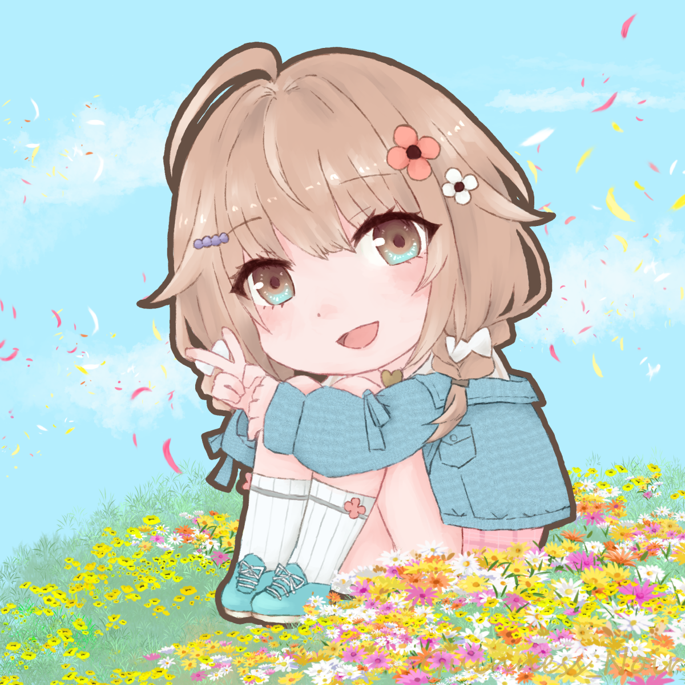

JQG ▶ Job Quick Guide
FF14のジョブスキルをレベル帯ごとに確認できるWebツール。 レベルシンク時のスキル確認や、軽減・バフ確認をすばやく行えるように制作。
個人開発、受託Web制作、イラスト制作、配信活動をまとめたポートフォリオサイト。 「何を作っているか」「どんな形で届けられるか」を、研究室の記録のように整理して見せる場所です。
観察・実験・試作を繰り返して生まれた、個人開発の研究成果。
FF14のジョブスキルをレベル帯ごとに確認できるWebツール。 レベルシンク時のスキル確認や、軽減・バフ確認をすばやく行えるように制作。
日常タスクをクエスト化して管理する自己管理アプリ。 ログやレベルアップ要素を組み込みながら制作していたが、現在はJQGに集中するため一旦停止中。
※ ポートフォリオ上では「制作途中作品」として掲載
あわら市防災士の会様向けに、イベント申し込み受付フォームと管理用の仕組みを制作。< Google Apps Script と Google Sheets を活用し、 受付・定員管理・通知導線を整備。 運用負担を軽減できる仕組みを構築しました。
今後ここに、直近のWeb制作実績を追加予定。トップは見やすさを優先して代表例のみ掲載。
GAS、静的サイト、申し込みフォーム、運用寄りの制作物などを今後追加していく枠。

翠仙望様よりご依頼いただき、ライバー様のお誕生日お祝い色紙用として制作。 贈り物としての用途を意識し、表情やポーズをやわらかく明るい雰囲気で仕上げました。
ライバー様よりご依頼いただき制作したミニキャライラスト。 IRIAM用（600×600）および配信・グッズ用（2000×2000）の2サイズに対応し、 表情差分も含めて制作。 商用利用を前提とした用途を想定し、明るく優しい印象で仕上げました。 表情差分（通常／寂しい）
イラストは枚数が増えやすいので、トップは代表例だけにして、一覧ページでしっかり見せる構成がおすすめ。
活動内容、使うツール、ポートフォリオ全体の方向性をまとめた欄
配信・創作・個人開発を行う、メセグル錬金工房の運営者。 Webツール、フォーム制作、イラスト制作などを通して、「使いやすさ」と「世界観」の両立を目指している。
必要なら…今後ご依頼導線も追加可能。